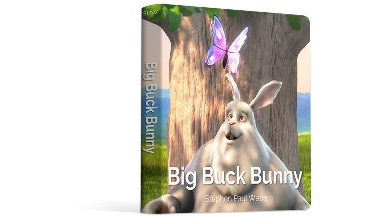

Our children are the most creative component of our society. They are the great remixers. They absorb the culture that they are surrounded by, and create their own pictures and stories and songs. We hang these on our fridge, or listen, or sing along. We’re all proud of our little creators.
Children love to remix because they love to imitate. Give a child a Mickey Mouse colouring book and soon they’ll be drawing Mickey too. Watch Frozen and hear new stories about Elsa and Anna for weeks to come. We don’t give this a second thought. Surely copyright concerns are for other people, maybe teenagers making electronic music and anime music videos. Copyright need not apply here, in our children’s crayons.
Sure, I’ve not yet heard of a lawsuit being brought over a small child’s drawings, but children grow up. I’d like to talk about what happens when they do.
My sister, for instance, has grown up, gotten married, and is looking hard at what she wants to do with her life. What she enjoys most is creating visual art. So when she started taking commissions for paintings, what do you think she wanted to paint? What do you think people wanted her to paint? Disney characters, of course, the characters that she and her clients were so close to as children.
You can see examples of this everywhere. YouTube, DeviantArt, and Etsy are full of Star Wars, Star Trek, Muppets, old Disney, and various other art based on old franchises. Teens make gifs and videos, adults make paintings and scarves, everyone makes art and everyone is inspired by the culture that they absorbed as children. Those crayon drawings that no one was ever going to sue over have become hobbies and passions and, sometimes, careers. Careers that can get you in a lot of trouble.
Could these people have been kept away from strongly-protected copyrighted media as children? No. Moreover, I’m not sure one would want to even try that. When they realize, however, the problems inherent in taking inspiration from locked-up culture, it is tempting suggest they simply draw inspiration from elsewhere. There are books, movies, songs, comics, and more either in the Public Domain, or available under Creative Commons licenses. Why not look there? Well, you cannot say to an artist “Oh, just make things with this instead.” That’s not how art works. Art comes from inspiration, and inspiration is not something you can “just swap out”. The issue for these creators is not that they have seen locked-up culture, it is that they have not been exposed to creatively free culture.
So, what can we do?
Give a Child a Story They Can Create With
There are stories and images in the world that are very child-friendly and also provide the creative freedom that will be so important as their desire to create matures. Some great examples include picture books available from Brothers Whim, a cute webcomic called Pepper & Carrot which recently got a printed book funded, and several animated shorts from the Blender Institute, many featuring characters and plots suitable for children.

I am also working in this area, creating a board book for young children using some of the Blender animated characters which you can currently back in crowdfunding.
These works, and others, can be part of the culture a child absorbs while growing up, becoming part of what inspires them later in life. When they find themselves confronted by the dilemma of being inspired by art that our society forbids them to be inspired by, there is a chance they will seize upon other images from their past. Ones they may reuse and remix to their heart’s content.